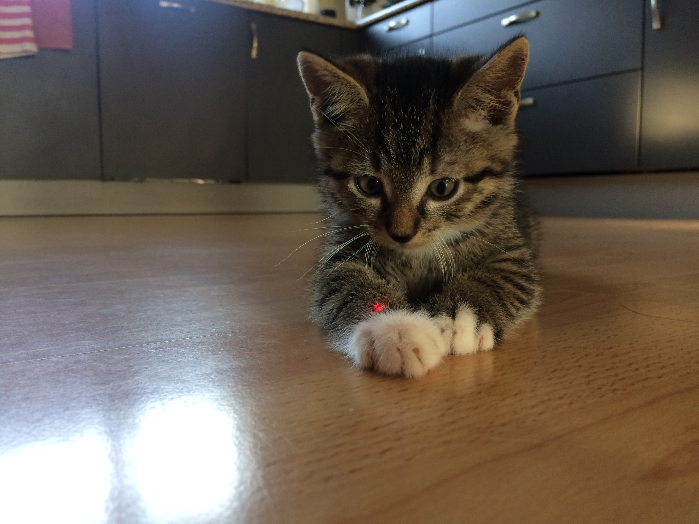
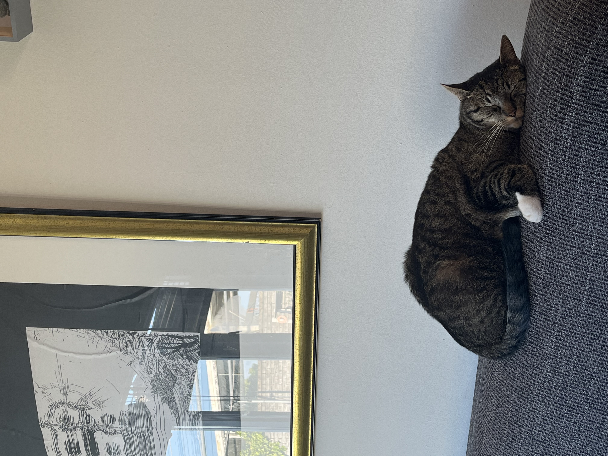
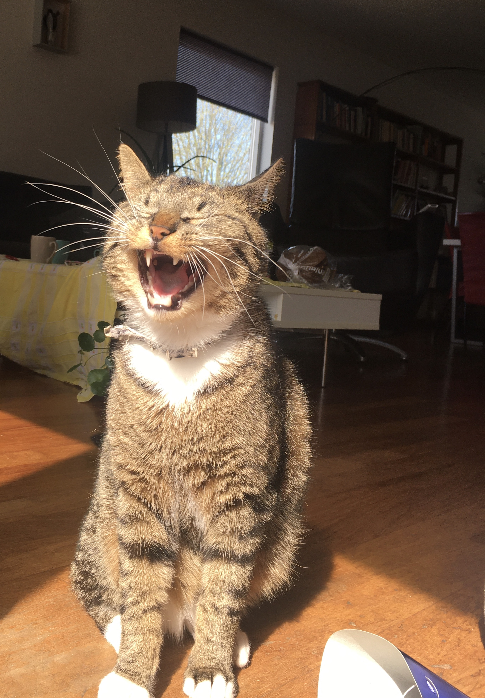

Op deze foto zie je Maui toen hij nog een kitten was. Maui was een van de weinige over uit het nestje. Toen we bij hem gingen kijken merkte ik en mijn zusje al gelijk dat we een goede klik hadden met hem. 
Maui
Dit is Maui. Maui is een Cyperse kater (streepjes kat). Ik heb Maui vijf jaar geleden (2018) uit een nestje van een vriendin van mij gekregen. Maui is de eerste kater die ik en mijn ouders hebben geadopteerd. Voor hem hebben wij alleen maar poesjes gehad. Dat kwam omdat mijn ouders dachten dat katers veel "drukker" waren en meer gedudld en tijd nodig hadden. Maar bij Maui was dat helemaal niet zo. Maui is een super rustige en vriendelijke kater.
Maui houd er heel erg van om te slapen. Het maakt niet uit wat er gebeurd, Maui slaapt er (bijna) altijd doorheen. Ook maakt het voor Maui niet uit waar hij slaapt. Maui kan slapen in een mandje, kartonnen doos, op de grond, in een plantenbak etc. 
Maui heeft ook hobby's. Hij houd van heel veel dingen, namelijk: spelen met Snoes, slapen, op schoot liggen, Snoes pesten en heel veel selfies maken. Onderaan de pagina komen een paar van de beste "selfies" van Maui. 